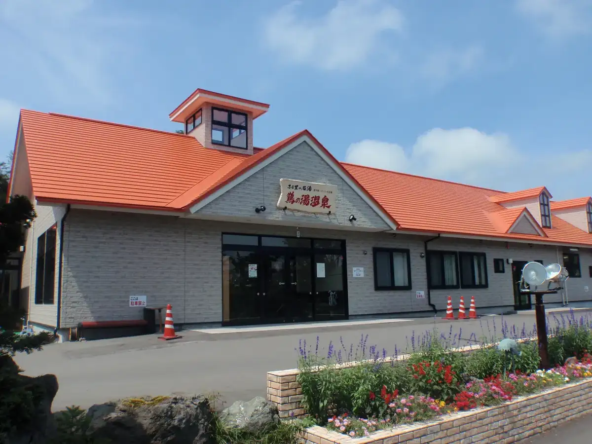
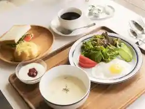
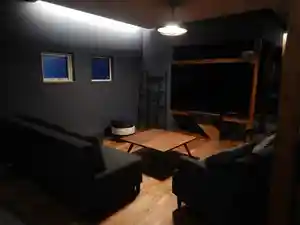
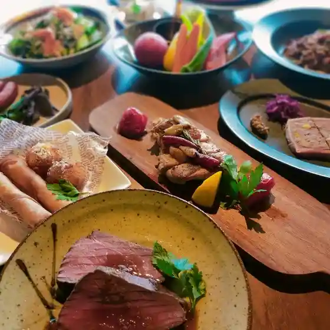
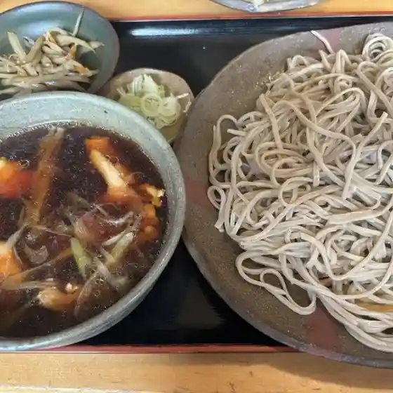
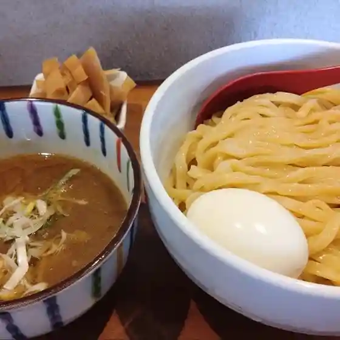
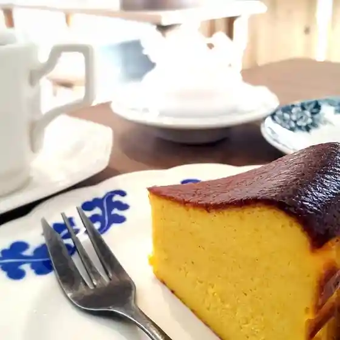
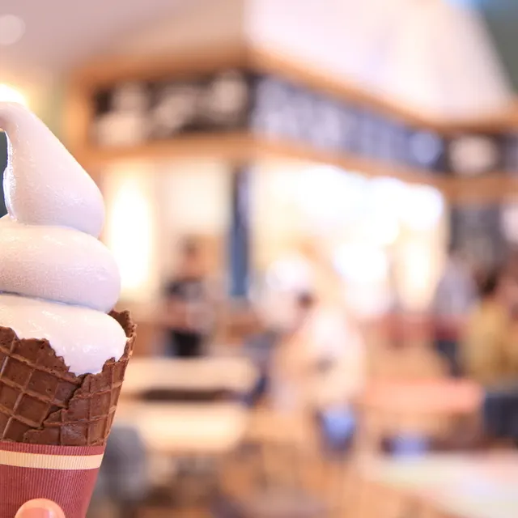
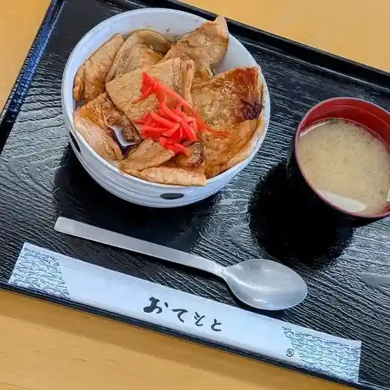
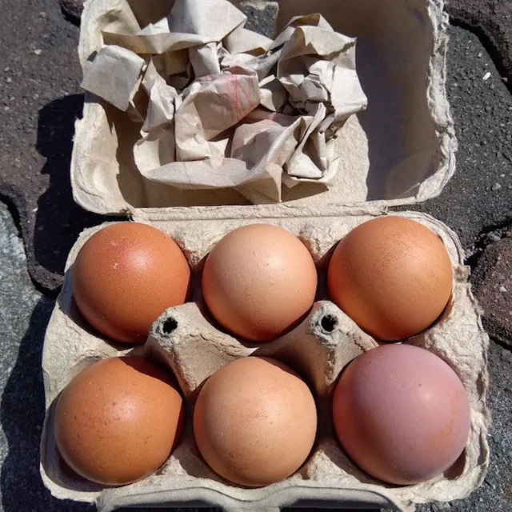

Abira
Abira · Hokkaido
Abira
Highlighted on the Hokkaido map.

Stay
ノースゲートイン アビラ

Noosugeetoin Abira
Ａ－Ｖｉｌｌａ

A - V I L L A
Dining
INAW/Remycheeeeese

Inaw/Remycheeeeese
そば哲 遠浅店

Soba Satoshi Tooasa Mise
麺屋 美しい日

Men Ya Utsukushii Nichi
灯菓舎

Tomoshibi Ka Sha
鳥吉

Tori Kichi
デゴイチ ステーション カフェ

Degoichi Suteeshon Kafe
お食事処 和

O Shokuji Tokoro Wa
自然体験農園 とあさ村

Shizentai Ken Nouen Toasa Mura
鶴乃湯温泉
Tsuru No Yuon Izumi
角谷
Kakutani
LAWSON 安平町遠浅店
Lawson Abira Machi Tooasa Mise
北の歓 菓子工房
Kita No Kan Kashi Koubou
デゴイチ ステーション ショップ
Degoichi Suteeshon Shoppu
たこちゃん
Takochan
栄寿し／レストラン渡辺
Eiju Shi / Resutoran Watanabe
京城館
Keijou Kan
道の駅 あびらD51ステーション
Michi No Eki Abira D51 Suteeshon
セベズヒルゴルフクラブ
Sebezuhirugorufukurabu
和道堂
Kazumichi Dou
早来かりんず
Hayakita Karinzu
そば哲 本店
Soba Satoshi Honten
ファミリーパーク追分キャンプ場
Famiriipaaku Oiwake Kyanpu Ba
佐藤菓子舗
Satou Kashi Ho
三九ラーメン
Sankyuu Raamen